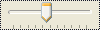

TrackBarControl
(vert = false, noticks = false, tickmarks = 'BOTTOM',
enableselrange = false, fixedlength = true, nothumb = false,
slidetip = true, style = 0, range = false, start = 0,
ticfreq = false, tip = "")
A trackbar is a control that contains a slider and tick marks. The user can move the slider, using either the mouse or the direction keys. The slider in a trackbar moves in increments that are specified when creating.
- vert
- Determine the orientation of the trackbar. If false the trackbar is oriented horizontally, if true it is oriented vertical
- noticks
- To create a trackbar that does not display tick marks
- tickmarks
- True to display tick marks. For horizontal trackbars, you can specify "BOTTOM" or "TOP". For vertical trackbars, you can specify "RIGHT" or "LEFT". ("BOTTOM" and "RIGHT" are the default settings.) For tick marks on both sides, specify "BOTH".
- enableselrange
- To display a selection range. When a trackbar has this style, the tick marks at the starting and ending positions of a selection range are displayed as triangles (instead of vertical dashes) and the selection range is highlighted
- fixedlength
- If true the length of the slider remains the same even if the selection range changes
- nothumb
- true does not include the slider.
- slidetip
- true to display, clicking on the slide, a tip with the value of the current tick
- style
- to add a particular style
- range
- false or an object to set the min and max range. Default is #(0,100)
- start
- false or a number to set an optional initial position of the slider
- ticfreq
- false or an object to set the interval frequency for tick marks. Ex. #(5,0)
- tip
- to display a tip text for the control
For example:
TrackBarControl(ticfreq: #(10,1), xmin: 100)
will produce something like:
